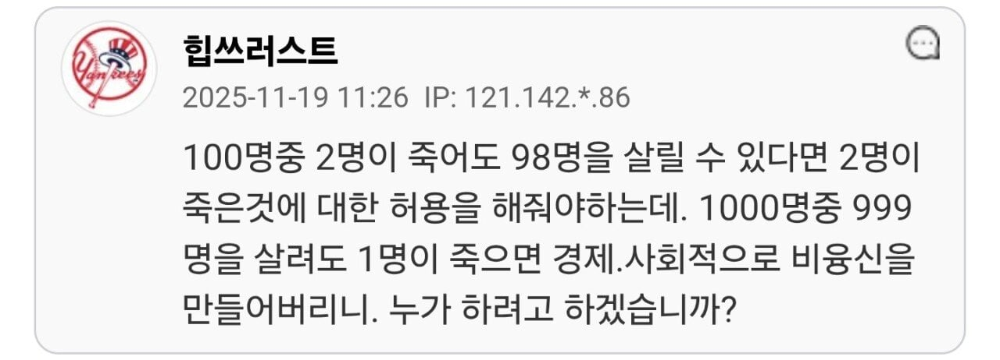

한 고등학생에 길에서 쓰러졌다. 119는 6시 33분 현장에 도착했다. 학생은 팔다리를 심하게 떨었지만, 이름을 부르면 반응은 했다. 전형적인 경련 환자였다.
경련은 뇌세포가 과흥분해 몸 전체가 의지와 상관없이 흔들리는 상태다.
치료는 쉬우면 쉽고, 어려우면 어렵다.
첫째, 숨을 잘 쉬도록 기도를 확보한다.
둘째, 즉시 정맥을 통해 신경 안정제(로라제팜, 디아제팜 등)을 투여하여 뇌를 안정시킨다.
셋째, 몸의 산성화를 막기 위해 알칼리 주사제(비본)를 투여한다. 경련은 쉬지 않는 전력질주와 같다. 산소는 부족해지고 젖산은 쌓여 뇌는 저산소증, 심장은 부정맥에 빠져 사망할 수 있다.
여기까지 하면 80~90%는 멈춘다. 하지만 10~20%는 계속 경련한다. 여기까지는 응급의학과 의사는 물론이고, 소아과, 신경과, 내과 의사도 할 수 있다. 1차 벤조디아제핀계 신경안정제가 효과 없으면, 다음 2차 약으로 항경련제(Levetiracetam(Keppra) 등), 그래도 안 되면 3차로 마취제 등을 써야 한다. (의사들은 대부분 1차 약은 알지만, 2차, 3차약은 모른다. 나도 2차, 3차 약은 찾아보았다.)
하지만 경련 치료는 경련이 멈추면 끝이 아니라 시작이다. 경련을 일으킨 원인을 찾아 치료해야 한다.
뇌염?
뇌출혈?
뇌종양?
약물중독?
대사 장애?
원인에 따라 필요한 전문의가 달라진다.
뇌출혈/뇌암이면 신경외과,
뇌염이면 신경과
소아라면 소아신경과,
수술이 필요한 상황이면 뇌종양·뇌출혈 전문의.
그리고 반드시 중환자실까지.
경련을 멈추고 원인까지 완벽하게 치료하려면 병원은 사실상 올스타팀을 갖춰야 한다.
그런데 한국의 법원은 이렇게 말했다.
“응급이라도, 그 분야의 세부 전문의가 아니면, 책임져야 한다.”
실제 판례가 있다. 응급소아외과 환자가 발생하자, 휴가 중인 소아 외과 전문의 대신 외과 전문의가 수술을 했다. 하지만 결과가 나쁘자, 보호자는 소송을 걸었고, 법원은 소아외과 전문의가 아닌 당직 외과 의사에게 응급 소아외과환자 수술을 맡긴 병원 측에 책임을 물어 약 15억여원 중 70%인 약 10억원의 배상을 명령했다. 그중 1000만원은 수술한 외과 교수에게도 책임을 물었다.
이 판결 이후, 의사와 병원은 이렇게 결론내렸다.
“소아외과 전문의 없으면 소아외과 응급을 받지 말자.”
그리고 판례를 중요시하는 법률에 따라 이 원칙은 모든 분야로 확장되었다.
경련 환자는?
소아라면?
뇌출혈이면?
뇌종양이면?
간질이면 소아신경과?
뇌출혈/뇌암이면 신경외과?
소아라면 소아신경외과?
“이 모두가 없으면, 받지 말자.”
경련을 하는 고등학생은 모두 8곳의 병원에서 거절당했다.
이유는 단 하나. ‘소아신경과’ 관련 배후 진료 불가. 결국 1시간 동안 뺑뺑이를 돌고, 학생은 앰뷸런스 안에서 심정지가 와서 사망했다.
살릴 수 있었을까? 가능성이 있었다. 경련만 멈추게 했더라도, 살릴 수 있다고 확신할 수 없지만 적어도 시간은 벌 수 있었다. 그러나 그날, 병원들은 학생을 받지 않았다. 의사가 없어서가 아니었다.
법원의 기준을 충족할 자신이 없어서였다.
법이 100%를 요구하자, 90%를 할 수 있는 의사들이 모두 퇴장했다.
안타까운 비극 앞에서 다시 묻자.
이러한 비극을 피하려면 무엇을 어떻게 해야할까?
High Risk, Law Return. (고위험, 돌아오는 법률 소송)
And Then There Were None. (그리고 아무도 없었다)
제목에 써있는 퍼온 글입니다.

일반인 대상으로 착한 사마리안 어쩌고하면서 넘어가주는 분위기 아냐?